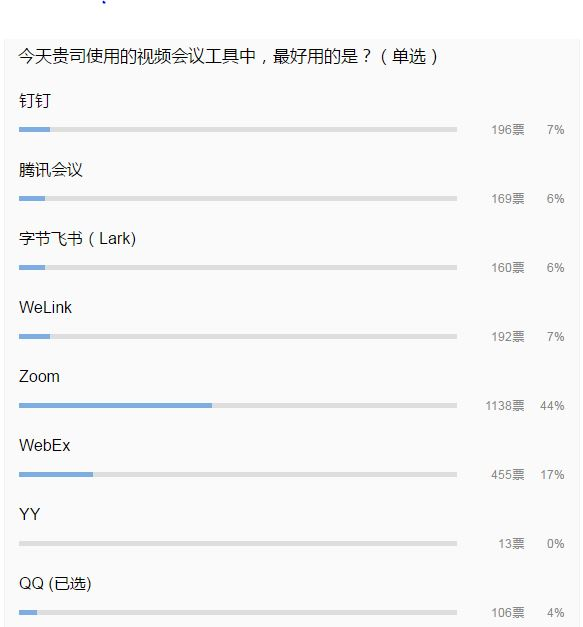
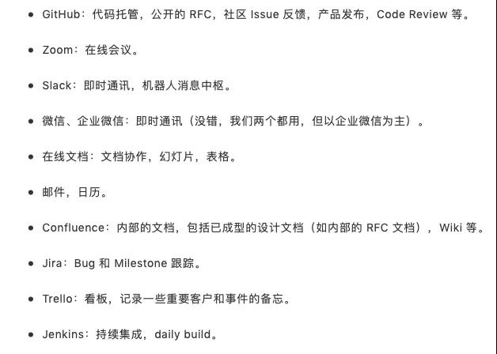

Tools
summarized by Jianan, 2019. This doc collects and collates some useful tools.
Visio 加 Latex 公式和字体
- ipe with command
pdftoipe...pdf ...ipethen add latex formula or words - Latex
\input - Aurora but has bugs
PDF文字背景色更改
FixedPageUI [
TextColor = #3e3121
BackgroundColor = #fbf0d9
SelectionColor = #f5fc0c
WindowMargin = 2 4 2 4
PageSpacing = 4 4
]
EbookUI [
FontName = Georgia
FontSize = 12.5
TextColor = #5f4b32
BackgroundColor = #fbf0d9
UseFixedPageUI = false
]
PDF复制去回车符
- https://pdfcopy.cn/
- ScholarAssist 8pxk
- copuTranslator is better
视频会议工具

远程协作工具

Conda 管理 Python 环境
-
首先安装好 anaconda
-
Python 环境管理 官方文档
-
创建并且激活
bash conda create --name myenv # Replace myenv with the environment name. conda create -n myenv python=3.6 # with a specific version of Python conda create -n myenv scipy # with a specific package
- 激活当前环境
```bash
activate myenv # prior to 4.6
conda activate myenv # only work on conda 4.6 and later versions
-
查看环境
bash conda info --envs conda env list -
删除环境
bash conda env remove -n myenv
Conda 环境下打开Jupyter
-
问题 ImportError:DLL load failed https://blog.csdn.net/lwgkzl/article/details/85202207
bash pip uninstall pyzmq pip install pyzmq -
如果碰到拒绝访问的问题 ， permission denied, 那么就要以以管理员方式启动cmd
-
问题 ImportError: No module named 'pysqlite2'#464
bash conda install sqlite -
现在可以打开 jupyter notebook
bash activate myenv g: # 进入到某个工作文件夹 jupyter notebook
Bibtex error
-
Something's wrong--perhaps a missing \item. \end{thebibliography}-
without abbreviations sample: Note don't add
.bibasBibliography.bibtex \bibliographystyle{IEEEtran} \bibliography{Bibliography}tex @inproceedings{jabbari2012dynamic, title={Dynamic IBVS control of an underactuated UAV}, author={Jabbari, Hamed and Oriolo, Giuseppe and Bolandi, Hossein}, booktitle=booktitle={2012 IEEE International Conference on Robotics and Biomimetics (ROBIO)}, pages={1158--1163}, year={2012}, organization={IEEE} } -
With abbreviations sample:
tex \bibliographystyle{IEEEtran} \bibliography{abrv,Bibliography}tex @inproceedings{jabbari2012dynamic, title={Dynamic IBVS control of an underactuated UAV}, author={Jabbari, Hamed and Oriolo, Giuseppe and Bolandi, Hossein}, booktitle=IEEE_J_JSAC, pages={1158--1163}, year={2012}, organization={IEEE} } -
delete the
.bbland.auxfile, and recompile again.
-
-
bibtex -
Missing $ insertedissue\usepackage[strings]{underscore}
IEEE/Word/Tex Fonts
-
change the mathtype font to tex look:
- open MathType editor, and select the following:
- Preferences --> Equation Preferences --> Load from file... --> Tex Look
-
LaTeX 默认的字体是 Knuth 设计的 Computer Modern 系列字体。XeLaTeX 和 LuaLaTeX 在调用 fontspec 之后默认字体是 Latin Modern 系列字体。
- Computer Moder 字体在这里 https://www.fontsquirrel.com/fonts/computer-modern 下载
\documentclass[conference,10pt]{IEEEtran}字体为 times, 具体可以在这里https://parasol.tamu.edu/pact11/IEEEtran.cls 看到% IEEE uses Times Roman font, so we'll default to Times.
Set IPV6 in Priority
https://jingyan.baidu.com/article/3ea5148982c61a52e61bba2c.html
IPv4协议
目前的全球因特网所采用的协议族是TCP/IP协议族。IP是TCP/IP协议族中网络层的协议，是TCP/IP协议族的核心协议。目前IP协议的版本号是4(简称为IPv4)，发展至今已经使用了30多年。IPv4的地址位数为32位，也就是最多有2的32次方的电脑可以联到Internet上。
IPv6协议
IPv6是下一版本的互联网协议，也可以说是下一代互联网的协议，它的提出最初是因为随着互联网的迅速发展，IPv4定义的有限地址空间将被耗尽，地址空间的不足必将妨碍互联网的进一步发展。为了扩大地址空间，拟通过IPv6重新定义地址空间。IPv6采用128位地址长度，几乎可以不受限制地提供地址。按保守方法估算IPv6实际可分配的地址，整个地球的每平方米面积上仍可分配1000多个地址。在IPv6的设计过程中除了一劳永逸地解决了地址短缺问题以外，还考虑了在IPv4中解决不好的其它问题，主要有端到端IP连接、服务质量(QoS)、安全性、多播、移动性、即插即用等。
IPv6与IPv4相比具有的优点
-
更大的地址空间： IPv4中规定IP地址长度为32，即有2^32-1个地址;而IPv6中IP地址的长度为128，即有2^128-1个地址。
-
更小的路由表： IPv6的地址分配一开始就遵循聚类(Aggregation)的原则，这使得路由器能在路由表中用一条记录(Entry)表示一片子网，大大减小了路由器中路由表的长度，提高了路由器转发数据包的速度。
-
增强的组播支持以及对流的支持： 这使得网络上的多媒体应用有了长足发展的机会，为服务质量(QoS)控制提供了良好的网络平台.
-
加入了对自动配置的支持： 这是对DHCP协议的改进和扩展，使得网络(尤其是局域网)的管理更加方便和快捷.
-
更高的安全性： 在使用IPv6网络中用户可以对网络层的数据进行加密并对IP报文进行校验,这极大的增强了网络安全
Resolving Low-Level Graphics Issues
- Problem description:
matlab
MATLAB has experienced a low-level graphics error, and may not have
drawn correctly. Read about what you can do to prevent this issue at
Resolving Low-Level Graphics Issues then restart MATLAB. To share
details of this issue with MathWorks technical support, please include
this file with your service request.
- in matlab command window, type in opengl('save','software')
- restart matlab, should work now
- references
- https://de.mathworks.com/matlabcentral/answers/157894-resolving-low-level-graphics-issues-in-matlab
- https://blog.csdn.net/sinat_26812517/article/details/51757663
Matlab Acitvation
- Assume you have a university account. When activating Matlab, make sure the "user name " is correct. Try "Administrator" may resolve this problem.
Outlook Crash
- 问题描述： 如果有某个邮箱未链接到服务器， outlook就直接崩溃
- 解决办法在这里： 调查外接程序导致的可能问题
- 退出 Outlook。
- 打开 "运行" 对话框。 为此，请根据您的 Windows 版本使用以下过程之一：
- 如果运行的是 Windows 10、Windows 8.1 或 Windows 8，请按 Windows 徽标键 + R 键。
- 如果您运行的是 Windows 7，请单击 "开始"，在搜索框中键入run ，然后单击 "运行"。
- 键入Outlook/safe，然后单击 "确定"。
- 如果问题已修复，请单击 "文件" 菜单上的 "选项 "，然后单击 "加载项"。
- 选择 " COM 加载项"，然后单击 "转到"。
- 单击以清除列表中的所有复选框，然后单击 "确定"。
- 重新启动 Outlook。 如果未出现问题，请一次开始添加一个加载项，直到出现问题。
Pair Airpods with Ubuntu
General Steps
- Place both your AirPods in the charging case.
- Open the lid on the case. You'll see the light come on, indicating the charging status.
- Press and hold the circular button on the back of your AirPods case.
- Set
ControllerMode = bredrin/etc/bluetooth/main.conf sudo /etc/init.d/bluetooth restart- Try to pair again
- if still has problems, try to install blueman.
sudo apt-get install blueman
useful references
Overthewall
-
Lantern download https://github.com/getlantern/download/wiki
-
to share lantern network from a PC's hotspot
-
电脑端设置：右键Lantern桌面图标，选择属性->快捷方式中的目标选项，空格隔开后在后面增加一条 -addr 你电脑的ip地址:8787，例如
-addr 192.168.137.1:8787保存后重启Lantern -
手机端设置：确保手机和电脑在同一个局域网内，进入WiFi选项，点击你所连接的WiFi后面的小叹号，进入设置，修改下面的HTTP代理为手动，服务器里填电脑ip
192.168.137.1，端口填8787
-
-
problem and sol. http://www.kexueren.com.cn/12372.html
-
cracking guide https://black1ce.com/software/windows-lantern.html
-
旋风 /damaged
-
psiphone